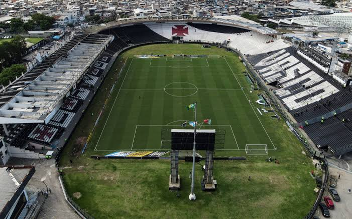
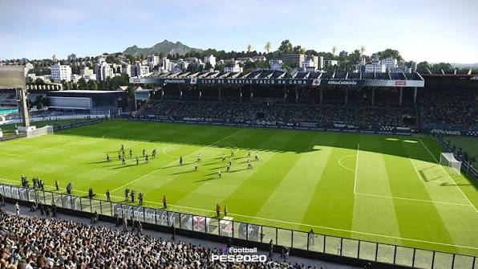

Galeria do Vasco da Gama
Imagens

Vista aerea de Sao Januario, a casa do Vasco
Sao Januario visto de fora

Sao Januario em 2020
Videos
Gols do titulo da Libertadores 1998
Gols do titulo do Brasileirao 1997
Gols do titulo da Copa do Brasil 2011
Audios
Hino do Vasco
Hino do vasco versão barrões da pisadinha
Vasco x Flamengo